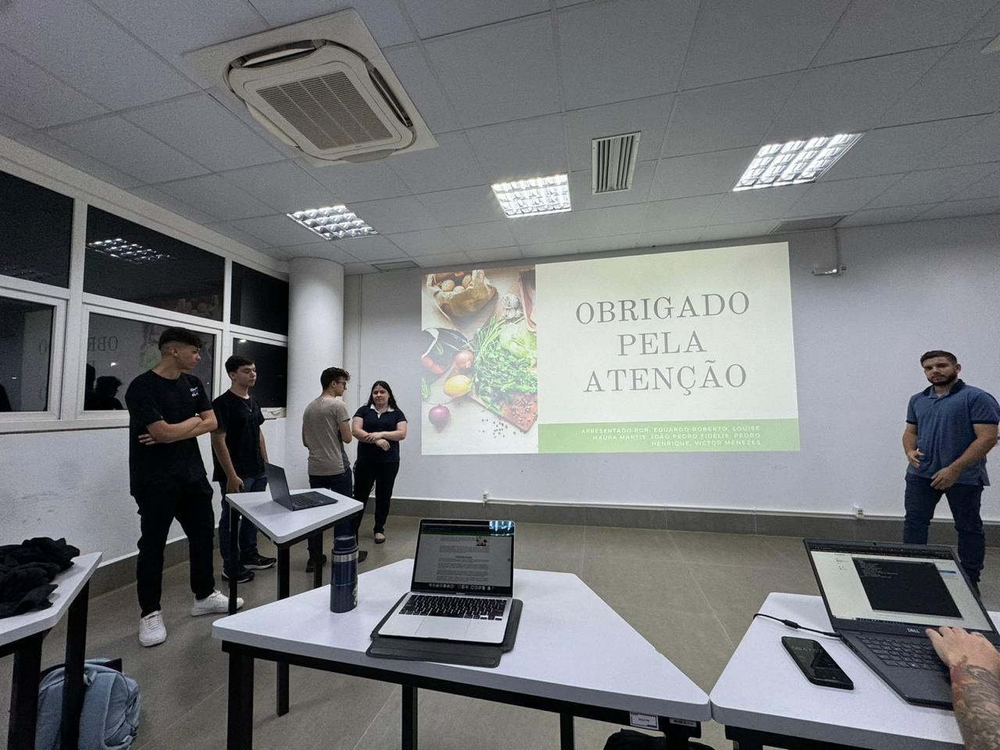
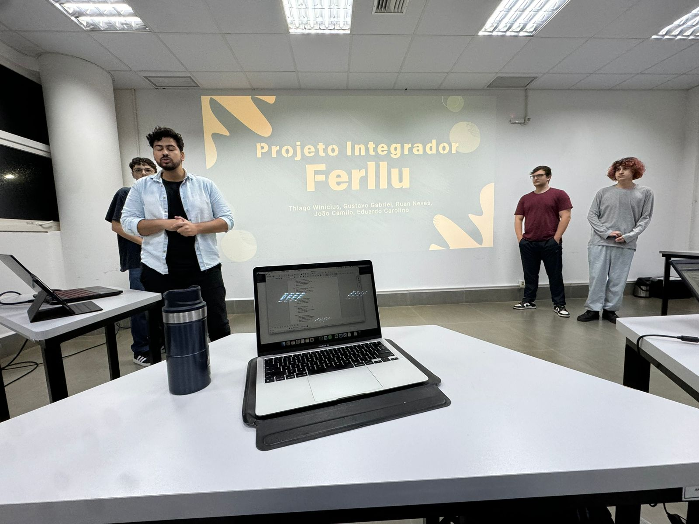

DISCIPLINAS
1º SEMESTRE
- Gestão de Projetos e Métodos Ágeis
- Engenharia de Requisitos
- Desenvolvimento de Interface Gráfica
- Desenvolvimento Desktop
- Modelagem de Sites Básicos
- Atividade Complementar I
2º SEMESTRE
- Orientação a Objetos e UML
- Abstração e Modelagem de Dados
- Desenvolvimento de Sites Dinâmicos
- Estrutura de Dados
- Projeto Integrador I - Modelagem
- Atividade Complementar II
3º SEMESTRE
- Desenvolvimento de Software como Serviço
- Persistência de Dados
- Teste de Software
- Gestão de Versionamento e Virtualização
- Projeto Integrador II - Desenvolvimento
- Atividade Complementar III
4º SEMESTRE
- Gestão de Projetos e Métodos Ágeis
- Engenharia de Requisitos
- Desenvolvimento de Interface Gráfica
- Desenvolvimento Desktop
- Modelagem de Sites Básicos
- Atividade Complementar I
5º SEMESTRE
- Orientação a Objetos e UML
- Abstração e Modelagem de Dados
- Desenvolvimento de Sites Dinâmicos
- Estrutura de Dados
- Projeto Integrador I - Modelagem
- Atividade Complementar II
6º SEMESTRE
- Desenvolvimento de Software como Serviço
- Persistência de Dados
- Teste de Software
- Gestão de Versionamento e Virtualização
- Projeto Integrador II - Desenvolvimento
- Atividade Complementar III
PROJETOS
COZINHA SOCIAL
O projeto de cozinha social, foi realizado por alunos que cursaram Análise e Desenvolvimento de Sistemas, onde uma empresa apresenta um problema onde eles gostariam de remover a identidade de restaurante, para um equipamento público do município de Toledo, buscando mais reconhecimento.

FERLLU
Também realizado por alunos de ADS, a empresa Ferllu não têm um site e precisam de mais visibilidade e reconhecimento, então esse projeto foi realizado.
